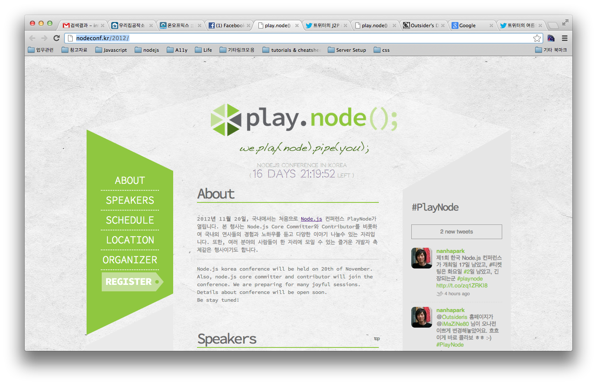
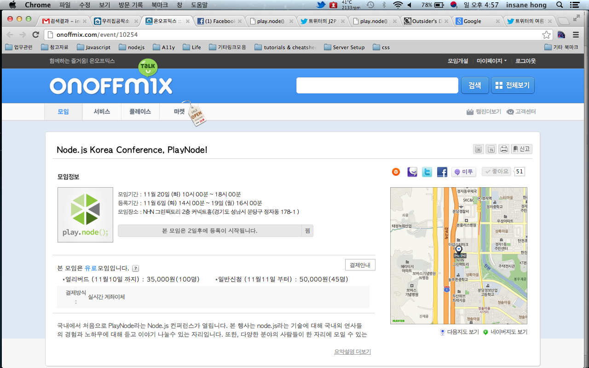

About Author

Insanehong
blog: http://insanehong.kr
twitter: @insanehong
github: insanehong.github.com
- NAVER Corporation, Front-End Engineer(2013~)
- Like Javascript, Dart, HTML5, CSS3,Responsive Web, Haroopress, Frends, Lean Startup, Open Source
- Hackrslab co-founder
- About me http://about.me/insanehong
About this Article
Date Released:
Sunday, November 4 2012 5:09 PMNode.js Korea Conference 1st. PlayNode를 준비하면서
모든일의 시작은 낚시로 부터
"인세인 짐 모해?? 시간 있으면 강남에서 같이 밥 먹자"
어느날 갑자기 걸려온 난하님님의 전화한통 …그렇다 모든 일의 시작은 바로 여기서 시작되었다.
즐겁게 밥을 먹으며 이야기 꽃을 피우고 있을무럽 원래의 모임의 취지였던 node.js 컨퍼런스에 대한 얘기를 하실 분들이 하나둘 모여 들었고…. 내가 맛있게 먹은 설렁탕 한그릇의 계산도 너구리 채수원님 이 하시면서 난 미끼를 물어버린 한마리 물고기로 전락하기 시작했다.
카페에서 이어진 이야기에서 밥값이라도 하자는 심정으로 열심히 의견을 제시했고…. 그 커피 마저 얻어먹는 결과로 이어지면서 내 이름은 어느세 오거나이저로 등록되어버렸다.
티저의 오픈과 컨퍼런스 이름 정하기
어느덧 진행을 발빠르게 진행되어 티저 사이트가 열렸다. 사실 급히 티저 사이트가 오픈된 뒷배경이 있다. 이부분에 대한 글을 적어야 하나 말하야하나 고민했지만 사실 재미있는 애피소드중 하나라고 생각해 남겨두는 것이 좋겠다는 결론을 지었다.
이미 한국행 비행기표까지 끈어놓고 기다리는 아이작 슐레터의 한마디는 정말 우리의 배꼽 빠지고 뒤로 자빠지게 했다.
"나 비행기표 다 끈었어!! 근데 니들 정말 컨퍼런스하는거 맞지?? 나 진짜 한국도 되는거지???"
그렇다. 아이작에게 오라고 해놓고 정작 이사람에게 보여줄게 없었다. 그래서 가장 급선무인 티저 사이트를 오픈하게 되었고 난하님님과 Outsider님의 노력으로 금세 티저 사이트가 나오게 되었다.
그리고 또 하나의 이슈로 떠오른 것이 컨퍼런스의 이름을 정하는 것이였다. 정말 많은 후보들이 거론되었다.
nodestorm ,nodeplay, nodeeffect, nodeday 등 많은 이름들이 후보로 나왔다. 한가지 재미있는 것은 원래 채택된 이름은 nodeplay 이다. 하지만 어감등 이것저것을 고려하여 playnode로 재 결정되었다.
정식 사이트 오픈 과 온오프믹스 모임개설
이런저런 이슈들에 대한 결정이 반복되는 과정중 이번 컨퍼런스의 디자인을 맞은 iMaZiNe님이 컨퍼런스 로고를 만들어 주셨고 이어 사이트 디자인까지 만들어 주셨다.
드디어 시작된 정식 사이트 작업. 이 작업 역시 난하님님과 Outsider을 비롯해서 H3에 참가 하셨다가 사이트작업에 대한 이야기를 들으신 오거나이저 중 한분이신 J2P님이 합류하셔서 정말 단 하루 이틀사이에 뚝딱하고 PlayNode 공식사이트을 만들어 내셨다. 이분들의 노고에 다시한번 박수를 보낸다.

사이트도 열렸겠다 이제 컨퍼런스 신청을 받기 위한 온오프믹스 모임개설이 남았다. 그리고 그 임무는 나에게 떨어졌다.
사실 오거나이저로 있으면서 마땅히 할일없이 놀고 있었다. 컨퍼런스 당일 여러사정으로 참석여부가 불투명한 관계로 그외 발로 뛰어다녀야하거나 온라인상에서 가능한 일을 맡아야 겠다는 생각은 하고 있었다. 어찌되었건 온오프믹스 모임 개설도 완료.

이제 본격적으로 준비에 들어간 PlayNode 준비
컨퍼런스를 준비하는 것도 처음이고 이런일을 하게 될 것이란 생각은 추호도 해본적이 없기에 이런저런 시행착오도 많이 격었지만 어찌되었건 지금은 어느정도 준비가 마무리되어가고 부가적인 준비들로 바쁜 날을 보내고 있다.
금요일에는 하루종일 커피숍에 앉아 장정화님과 보도자료를 만들면서 일하는 것보다 더 힘든 하루를 보내기도 하였다.
이직을 하면서 3~4일정도의 휴식기간이 생겼지만 KTH H3 컨퍼런스 참여와 PlayNode 준비로 쉬는게 쉬는게 아니였던 휴식시간을 보내고 오늘로서 이 달콤한 휴식도 끝이 나고 있다.
모처럼 만에 휴식기간을 바쁘게 보내고 나니 짧게나마 이 과정을 글로 남기고 싶어져 이렇게 동내커피숍에 앉아 진상을 떨고 있다.
어쨋건 2012년 11월 20일에 열리는 국내 첫 node.js korea conference 1st. PlayNode 가 점점 다가오고 있고 모임신청기간도 이제 이틀 남았다.
node.js에 관심이 있는 많은 분들의 참여와 관심을 받아 성공적으로 끝내길 …..
이렇게 한가로이 타자나 두두리는 저를 제외하고 이시간에도 컨퍼런스준비에 열심히이신 오거나이저분들 모두 힘내시길..
By Insanehong